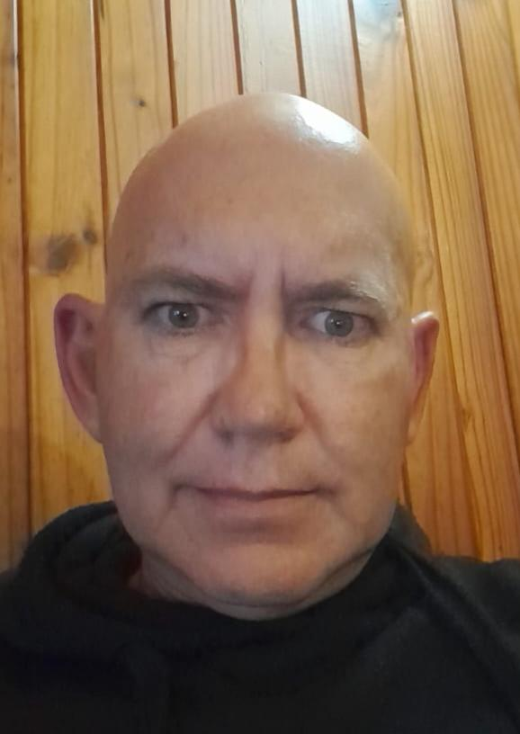

Resume of Donovan Lewis

Summary of myself
I am a dedicated hard working indavidule that takes pride in my work,
applying myself to the fullest in everything I do.
Education
- Gratuated High School 1994
- Computer Engineering
- A + 1999
- N + 1999
- HP Storage Works 2008
- MCITP 2011
Work Experience
- ICC Bali
July 2017-March 2020
- Sound and stage setup
- Sound Engineering
- Lighting equipment setup
- Light Engineering
Skills
- Reading electrical and electronic diagrams★★★★★
- Repairing electronic equipment★★★★
- Fabricatin speaker enclosures★★★★★
- Repairing Desktops, Laptops, Servers
- Hardware and Software support
- System design
- System configuration